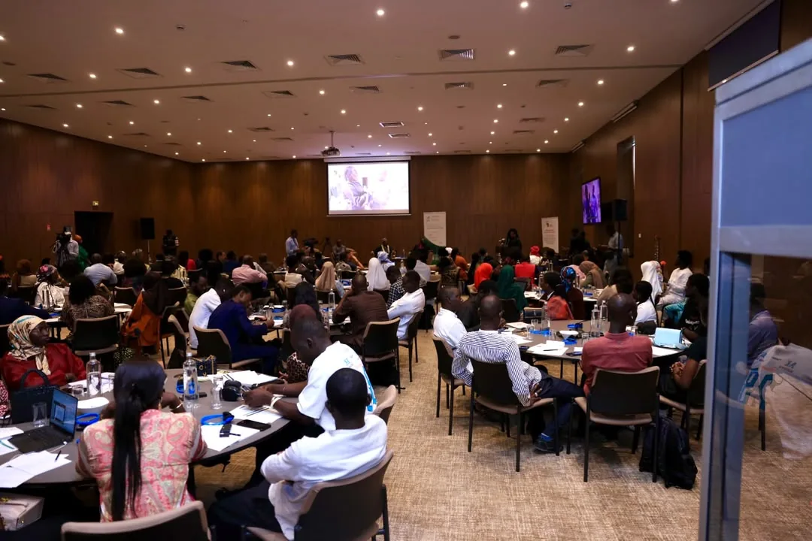

01Climat & Jeunesse
Coastal Futures
Cinq pays d'Afrique de l'Ouest · Lancé en juin 2026, Dakar
Une initiative régionale de résilience climatique côtière et d'entrepreneuriat vert. Coastal Futures outille les jeunes d'Afrique de l'Ouest pour répondre à l'érosion côtière, à la montée des eaux et à la perte des moyens de subsistance liés à l'océan, et pour en faire des activités.
- Sénégal, Guinée, Guinée-Bissau, Sierra Leone et Ghana.
- Une feuille de route 2026–2027 reliant la jeunesse à la finance climatique internationale.
- Construite avec le Ministère de l'Environnement, l'AFD, Tree AID et des partenaires régionaux.
Organisée par l'IAG
Lire l'article